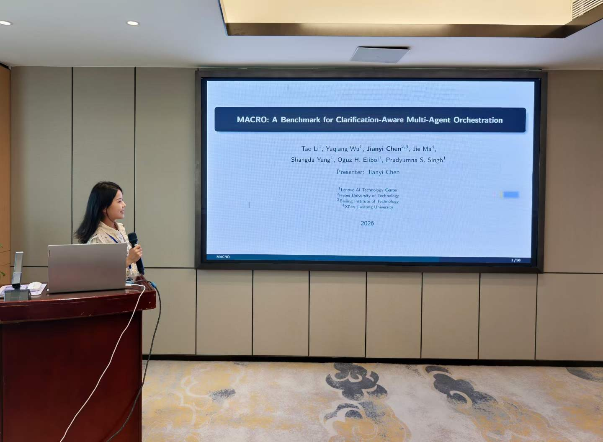
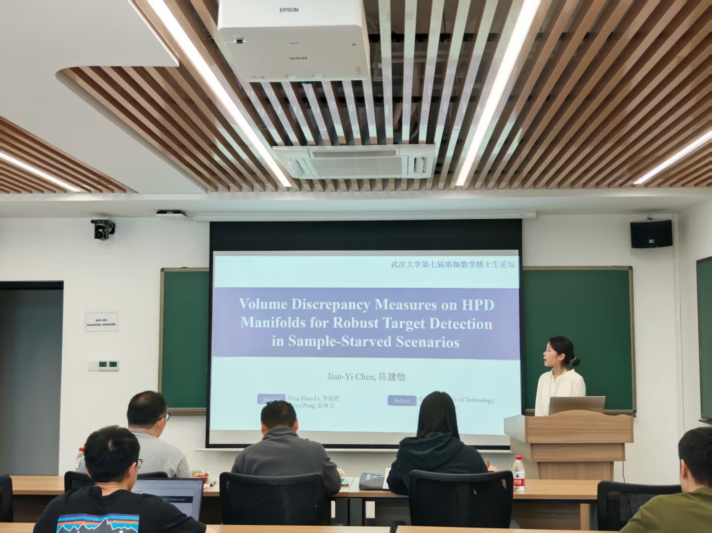
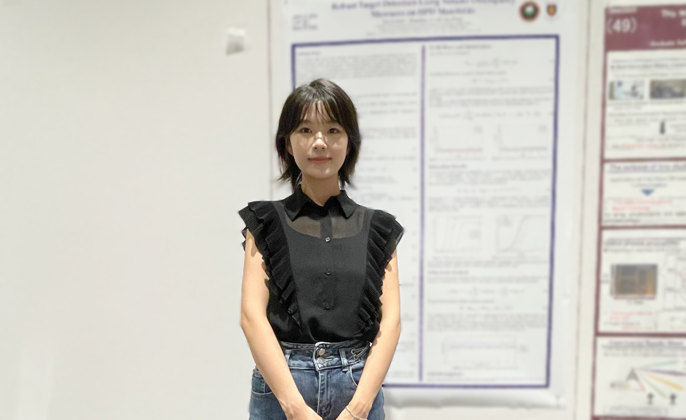
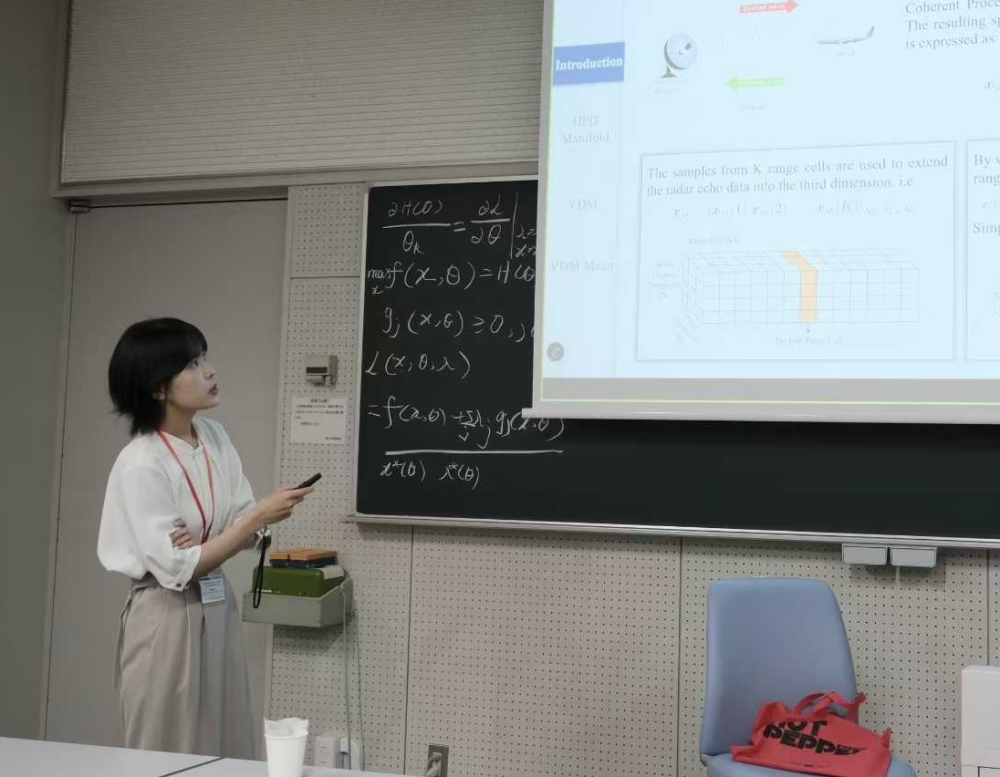
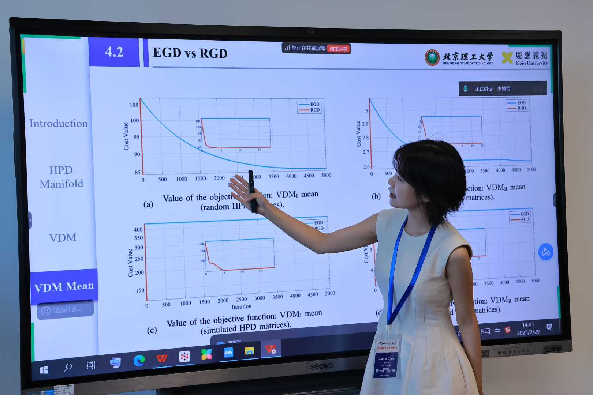
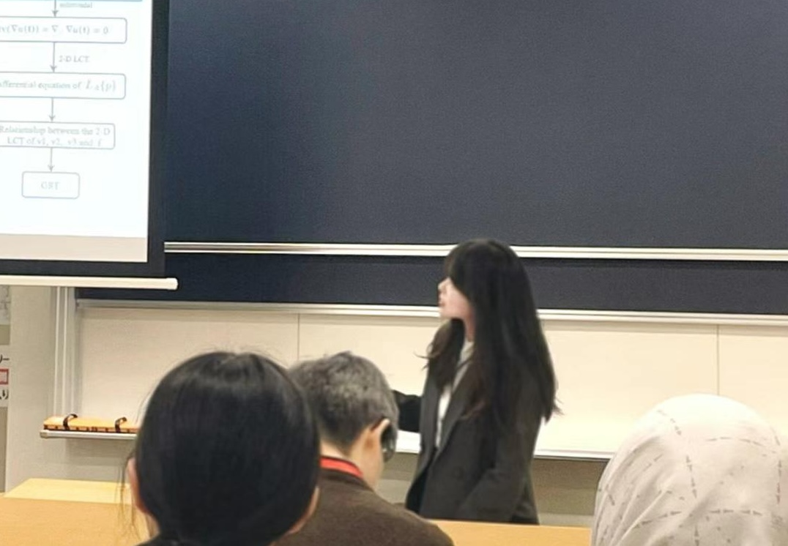
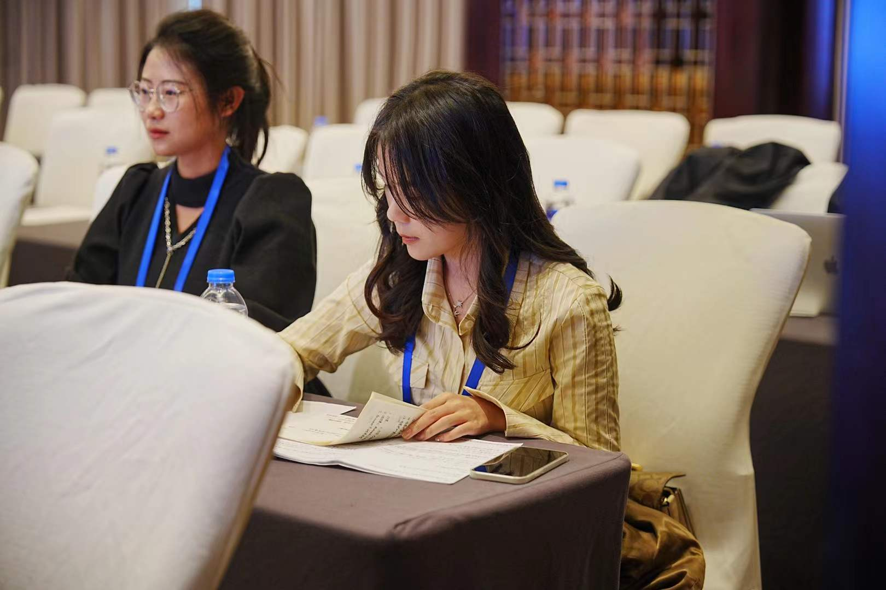

我是河北工业大学理学院讲师，博士毕业于北京理工大学应用数学专业，主要研究方向为图信号处理、时频分析与信息几何。博士期间曾作为国家公派联合培养博士赴日本庆应义塾大学开展合作研究，并持续拓展至目标检测、多智能体编排与机器学习等交叉方向。
研究兴趣
- 图信号处理
- 时频分析
- 分数域傅里叶变换
- 信息几何在目标检测中的应用
- 多agent编排的Benchmark
- 机器学习与深度学习
工作经历
2026.08 – 至今 · 讲师
河北工业大学 · 理学院
教育经历
2022.09 – 2026.06 · 博士研究生 · 应用数学
北京理工大学 · 数学与统计学院
导师：李炳照 | 研究方向：信号处理、时频分析、线性正则变换、图信号处理
2024.12 – 2025.12 · 联合培养博士 · 应用数学
日本庆应义塾大学 · 机械工程系
导师：彭林玉 | 研究方向：信息几何在信号处理中的应用
2020.09 – 2022.06 · 硕士研究生 · 应用统计
北京理工大学 · 数学与统计学院
导师：李炳照 | 研究方向：机器学习、深度学习、信号处理
2016.09 – 2020.06 · 本科 · 信息与计算科学专业双学位班
河北工业大学 · 理学院
GPA: 3.65/4.0。获得理学院十佳大学生、河北省优秀毕业生等荣誉称号，后保研至北京理工大学。
Jianyi Chen (陈建怡)
Lecturer · Applied Mathematics
Affiliation: School of Science, Hebei University of Technology
Email: 15030218436@163.com
Google Scholar: Google Scholar
Zhihu: Zhihu
I am a Lecturer at the School of Science, Hebei University of Technology. I received my Ph.D. in Applied Mathematics from Beijing Institute of Technology, with research interests in graph signal processing, time-frequency analysis, and information geometry. During my doctoral studies, I was a CSC-funded joint Ph.D. student at Keio University, Japan, and have also worked across target detection, multi-agent orchestration, and machine learning.
Research Interests
- Graph Signal Processing
- Time-Frequency Analysis
- Fractional Fourier Transform
- Information Geometry for Target Detection
- Multi-Agent Orchestration Benchmarks
- Machine Learning and Deep Learning
Work Experience
2026.08 – Present · Lecturer
Hebei University of Technology, School of Science
Education
2022.09 – 2026.06 · Ph.D. · Applied Mathematics
Beijing Institute of Technology, School of Mathematics and Statistics
Advisor: Bing-Zhao Li | Research: signal processing, time-frequency analysis, linear canonical transform, graph signal processing
2024.12 – 2025.12 · Joint Ph.D. · Applied Mathematics
Keio University, Department of Mechanical Engineering, Japan
Advisor: Lin-Yu Peng | Research: information geometry in signal processing
2020.09 – 2022.06 · M.S. · Applied Statistics
Beijing Institute of Technology, School of Mathematics and Statistics
Advisor: Bing-Zhao Li | Research: machine learning, deep learning, signal processing
2016.09 – 2020.06 · B.S. · Information and Computing Science (Double-Degree Class)
Hebei University of Technology, School of Science
GPA: 3.65/4.0. Honors include Top Ten Student of the School of Science and Outstanding Graduate of Hebei Province; admitted to BIT via recommendation.
最新动态
2026

7月21日–26日 · 四川南充
参加 2026 International Workshop on Applied Geometry and Related Topics（IWAGRT 2026），作报告：MACRO: A Benchmark for Clarification-Aware Multi-Agent Orchestration。

4月18日–19日 · 武汉大学雷军科技楼
参加武汉大学「第七届珞珈数学博士生论坛」，作报告：Volume Discrepancy Measures on HPD Manifolds for Robust Target Detection。
2025

9月 · 日本冈山
参加 GlobalNet Workshop（GNW 2025）。

7月 · 日本川崎
参加 International Workshop on Applied Geometry and Related Topics（IWAGRT 2025）。

7月 · 中国北京
参加 Applied Math Workshop。
2025
获北京理工大学费振勇奖学金、优秀学生标兵。
2024
12月
作为国家留学基金委资助的联合培养博士，赴日本庆应义塾大学机械工程系开展为期一年的合作研究，合作导师彭林玉。
2024
第一作者论文发表于 IEEE Transactions on Signal Processing；获研究生国家奖学金，并获国家公派留学资格。
4月
发明专利「一种运动过程中异常心电信号的识别方法」获授权（ZL202210114479.6）。

3月 · 日本生田
参加 IVSP 2024。
2023

11月 · 中国西安
参加 ICSPS 2023。
2023
获北京交叉科学学会优秀墙报奖；获中国研究生数学建模竞赛荣誉证书。
Latest News
2026
Jul 21–26 · Nanchong, Sichuan
Presented at the 2026 International Workshop on Applied Geometry and Related Topics (IWAGRT 2026): MACRO: A Benchmark for Clarification-Aware Multi-Agent Orchestration.
Apr 18–19 · Lei Jun Science and Technology Building, Wuhan University
Presented at the 7th Luojia Mathematics Doctoral Forum, Wuhan University: Volume Discrepancy Measures on HPD Manifolds for Robust Target Detection.
2025
Sep · Okayama, Japan
Attended the GlobalNet Workshop (GNW 2025).
Jul · Kawasaki, Japan
Attended the International Workshop on Applied Geometry and Related Topics (IWAGRT 2025).
Jul · Beijing, China
Attended the Applied Math Workshop.
2025
Received the Fei Zhenyong Scholarship and the title of Outstanding Student Role Model at Beijing Institute of Technology.
2024
Dec
Began a one-year CSC-funded joint Ph.D. at the Department of Mechanical Engineering, Keio University, Japan, with advisor Lin-Yu Peng.
2024
First-author paper published in IEEE Transactions on Signal Processing; received the National Scholarship for Graduate Students and CSC overseas study qualification.
Apr
Invention patent “A method for identifying abnormal ECG signals during motion” granted (ZL202210114479.6).
Mar · Ikuta, Japan
Attended IVSP 2024.
2023
Nov · Xi'an, China
Attended ICSPS 2023.
2023
Received the Outstanding Poster Award from the Beijing Interdisciplinary Science Society, and an honor certificate from the China Graduate Mathematical Contest in Modeling.
项目与荣誉
项目经历
基于黎曼流形线性正则变换的海杂波抑制与目标检测方法研究
类型：国家自然科学基金面上项目 | 时间：2026.01 – 2029.12
聚焦信息几何与信号处理的交叉领域，开展黎曼流形下线性正则变换的理论与应用研究。主要负责理论创新与算法设计研究工作。
图分数阶傅里叶变换的理论与方法研究
类型：国家自然科学基金面上项目 | 时间：2022.01 – 2025.12
聚焦图信号处理的交叉领域，融合基础数学原理与信号处理技术。主要负责理论创新与算法设计研究工作。
全民健身信息服务平台关键技术的研究
类型：国家重点研发计划 | 时间：2020.12 – 2023.11
聚焦多层次全民健身服务评价的挑战，主要开展指标体系构建、评价模型与指标设计、系统开发等研究工作。负责整体规划与研发工作。
大港油田原油含水率监测与测量模型研究
类型：校企合作项目 | 时间：2019.11 – 2020.12
该项目分析了含水率数据的周期性，对其频域特征进行分类提取，然后进行多项式拟合。最后构建了基于移动平均和动态正则化算法的异常检测与预测模型。
奖项与荣誉
- 2026 北京市优秀毕业生 北京市
- 2026 育苗基金 河北工业大学
- 2026 品学兼优榜样 北京理工大学
- 2025 华瑞世纪奖学金 河北工业大学
- 2025 费振勇奖学金 北京理工大学
- 2025 优秀学生标兵 北京理工大学
- 2024 研究生国家奖学金 北京理工大学
- 2024 国家公派留学资格 国家留学基金委
- 2023 优秀墙报奖 北京交叉科学学会
- 2023 研究生数学建模竞赛荣誉证书 中国研究生数学建模竞赛组委会
Projects & Honors
Projects
Sea Clutter Suppression and Target Detection via Linear Canonical Transform on Riemannian Manifolds
Type: NSFC General Program | Period: 2026.01 – 2029.12
Research at the intersection of information geometry and signal processing, developing theory and applications of the linear canonical transform on Riemannian manifolds. Responsible for theoretical innovation and algorithm design.
Theory and Methods of the Graph Fractional Fourier Transform
Type: NSFC General Program | Period: 2022.01 – 2025.12
Research at the intersection of graph signal processing, combining fundamental mathematics with signal processing techniques. Responsible for theoretical innovation and algorithm design.
Key Technologies for a National Fitness Information Service Platform
Type: National Key R&D Program | Period: 2020.12 – 2023.11
Addressed multi-level evaluation of national fitness services, including indicator systems, evaluation models, and system development. Responsible for overall planning and R&D.
Crude Oil Water-Cut Monitoring and Measurement Models for Dagang Oilfield
Type: University–Industry Collaboration | Period: 2019.11 – 2020.12
Analyzed periodicity of water-cut data, extracted frequency-domain features, and applied polynomial fitting. Built anomaly detection and prediction models based on moving average and dynamic regularization.
Awards & Honors
- 2026 Outstanding Graduate of Beijing Beijing Municipality
- 2026 Seedling Fund Hebei University of Technology
- 2026 Model of Excellence in Character and Learning Beijing Institute of Technology
- 2025 Huarui Century Scholarship Hebei University of Technology
- 2025 Fei Zhenyong Scholarship Beijing Institute of Technology
- 2025 Outstanding Student Role Model Beijing Institute of Technology
- 2024 National Scholarship for Graduate Students Beijing Institute of Technology
- 2024 CSC Overseas Study Qualification China Scholarship Council
- 2023 Outstanding Poster Award Beijing Interdisciplinary Science Society
- 2023 Honor Certificate, China Graduate Mathematical Contest in Modeling CGMCM Committee
论文与专利
学术论文
以第一作者在 IEEE Transactions on Signal Processing、IEEE Transactions on Signal and Information Processing over Networks、Journal of the Franklin Institute、Signal Processing 等期刊发表论文 10 篇，另有会议论文 2 篇。全部论文见 Google Scholar。
Graph linear canonical transform: Definition, vertex-frequency analysis and filter design
Hyper-differential operator-based graph fractional Fourier transform: Novel approaches and applications
Operator-based graph linear canonical transform
The short-time Wigner-Ville distribution
Wigner distribution associated with linear canonical transform of generalized 2-D analitic signals
Multi-dimensional graph linear canonical transform and Its Application
Parametric quaternion Wigner-Ville distribution: Definition, uncertainty principles, and application
Parametric monogenic linear canonical wavelet transform
Graph fractional Hilbert transform, analytic signal, and its application to ECG classification
Fast numerical calculation of the offset linear canonical transform
The short-time Wigner-Ville distribution associated with linear canonical transform
Riesz transform associated with the linear canonical transform
专利
发明专利 1 项获授权，另有 1 项已申请。
| 日期 | 专利名称 | 专利编号 | 发明人 |
|---|---|---|---|
| 2024.04.09 授权 | 一种运动过程中异常心电信号的识别方法 | ZL202210114479.6 | 王宏洲，陈建怡，周志雄 |
| 2024.07.30 申请 | 一种基于二维图线性正则变换的图数据压缩方法 | CN202411031775.5 | 陈建怡，李炳照 |
Papers and Patents
Publications
10 first-author journal papers in IEEE Transactions on Signal Processing, IEEE Transactions on Signal and Information Processing over Networks, Signal Processing, Digital Signal Processing, and other venues, plus 2 conference papers. Full list on Google Scholar.
Graph linear canonical transform: Definition, vertex-frequency analysis and filter design
Hyper-differential operator-based graph fractional Fourier transform: Novel approaches and applications
Operator-based graph linear canonical transform
The short-time Wigner-Ville distribution
Wigner distribution associated with linear canonical transform of generalized 2-D analitic signals
Multi-dimensional graph linear canonical transform and Its Application
Parametric quaternion Wigner-Ville distribution: Definition, uncertainty principles, and application
Parametric monogenic linear canonical wavelet transform
Graph fractional Hilbert transform, analytic signal, and its application to ECG classification
Fast numerical calculation of the offset linear canonical transform
The short-time Wigner-Ville distribution associated with linear canonical transform
Riesz transform associated with the linear canonical transform
Patents
1 granted invention patent and 1 application.
| Date | Title | Number | Inventors |
|---|---|---|---|
| Granted 2024.04.09 | A method for identifying abnormal ECG signals during motion | ZL202210114479.6 | Hongzhou Wang, Jianyi Chen, Zhixiong Zhou |
| Filed 2024.07.30 | A graph data compression method based on two-dimensional graph linear canonical transform | CN202411031775.5 | Jianyi Chen, Bing-Zhao Li |
实习与实践
实习经历
2026.01 – 2026.05 · 算法实习生
联想集团 AI Technology Center
- 开展面向多 agent 编排的 benchmark 研究，撰写论文 MACRO: A Benchmark for Clarification-Aware Multi-Agent Orchestration。
- 该论文投稿 EMNLP 已被接收。
2021.01 – 2021.09 · 算法实习生
北京世纪未来教育科技有限公司
- 从事知识追踪领域的算法研究，重点在于使用 EM 算法和 MCMC 方法推导并实现 IRT 与 DINA 模型。
- 深入学习基于深度学习的前沿知识追踪方法，并成功复现 EKT 模型以评估学生知识状态，实现网络教育流量分层业务需求建模。
2020.09 – 2020.11 · 数据分析实习生
中国软件国际有限公司
- 主要参与开发「纽约出租车大数据分析系统」，负责数据库查询与处理、MapReduce 计算、Echarts 可视化分析、前端搭建以及任务协调等工作。
实践经历
2018.09 – 2018.12 · 数学建模协会主席
协助教师组织竞赛、提供课程培训并进行线上宣传；负责协调管理协会各部门的整体运营。
2017.01 – 2017.03 · AIESEC · 国际志愿者
曾前往阿塞拜疆首都巴库，参与 AIESEC 国际志愿者项目「TEACH MY OWN LANGUAGE」。
Internships & Practice
Internships
2026.01 – 2026.05 · Algorithm Intern
Lenovo AI Technology Center
- Conducted research on multi-agent orchestration benchmarks and authored MACRO: A Benchmark for Clarification-Aware Multi-Agent Orchestration.
- The paper was submitted to EMNLP and has been accepted.
2021.01 – 2021.09 · Algorithm Intern
Beijing Century Future Education Technology Co., Ltd.
- Researched knowledge tracing algorithms, deriving and implementing IRT and DINA models with EM and MCMC.
- Studied deep-learning knowledge tracing methods and reproduced the EKT model to estimate student knowledge states for stratified online-education traffic modeling.
2020.09 – 2020.11 · Data Analysis Intern
Chinasoft International Limited
- Contributed to the New York Taxi Big Data Analysis System, including database queries, MapReduce computation, ECharts visualization, front-end development, and task coordination.
Practice
2018.09 – 2018.12 · President, Mathematical Modeling Association
Assisted faculty in organizing contests, providing training, and online publicity; coordinated overall operations across association departments.
2017.01 – 2017.03 · AIESEC International Volunteer
Participated in the AIESEC project “TEACH MY OWN LANGUAGE” in Baku, Azerbaijan.